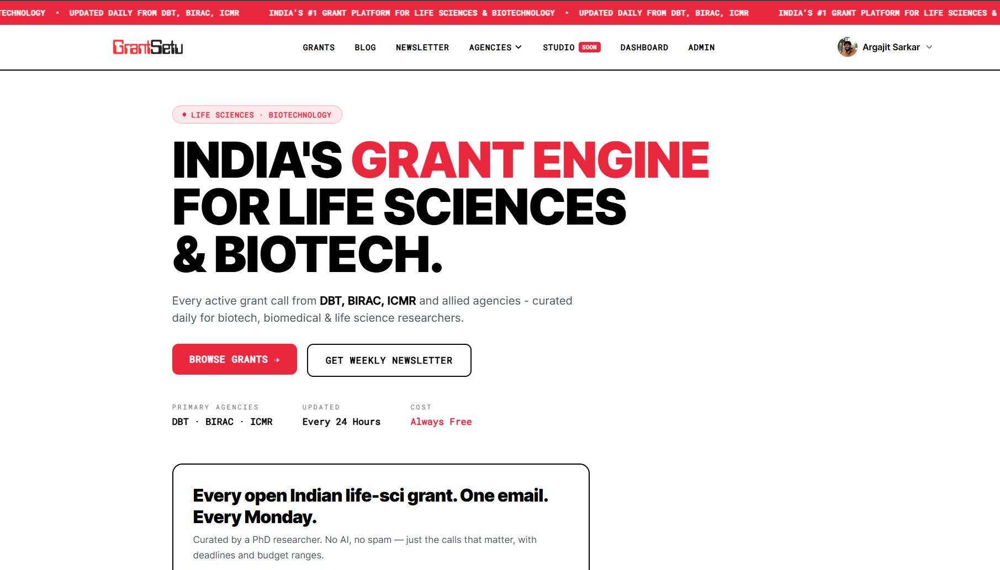
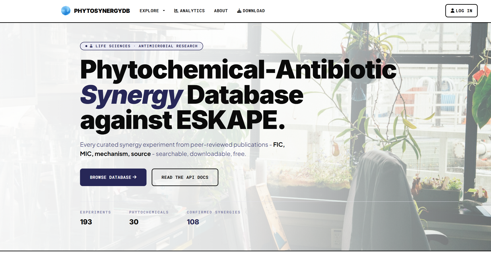

Web applications and tools built to solve real-world problems in science and education

A centralized platform connecting Indian researchers with relevant government and institutional grant opportunities. GrantSetu aggregates funding information from DST, DBT, ICMR, UGC, CSIR, and other agencies, making it easier to discover, filter, and track research grants - bridging the gap between researchers and funding bodies.

A curated database of phytochemical-antibiotic synergy data. PhytoSynergyDB catalogs experimentally validated plant-derived compounds that enhance antibiotic efficacy, including FICI values, MIC data, target organisms, and mechanism details - a valuable resource for researchers in antimicrobial resistance and drug discovery.
The official website for the Molecular Microbiology & Informatics Laboratory at Tripura University. Features lab member profiles, ongoing research projects, publications, and resources - serving as the digital presence for the lab group and its collaborative work in molecular biology and bioinformatics.
I'm open to building tools that help researchers and scientists work more effectively.